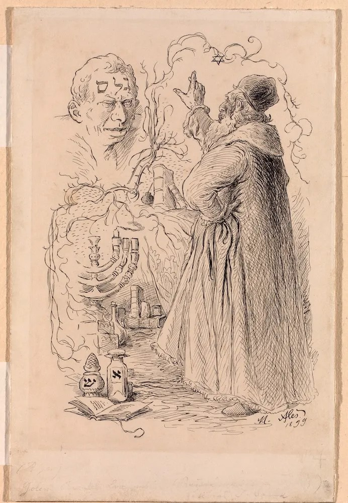

EMETH, THE TRUTH
It was built to protect them, and they feared it anyway — and fear, left to ferment for four hundred years, is a kind of truth too.

EMETH, THE TRUTH
It was built to protect them, and they feared it anyway — and fear, left to ferment for four hundred years, is a kind of truth too.
Feature map
Level-by-level features, as the figure refined them.
The Word on the Brow
passive
Tier III · Tank / Brute · Suggested CE ability: CON · Primary verb: Guard. The Golem's technique save DC = 8 + its proficiency bonus + its CON modifier.
While the word EMETH stands upon its brow, the Golem cannot be charmed, frightened, possessed, or put to sleep by any means, and it is immune to psychic damage. Divination effects that would locate or identify it return only the word — truth, truth, truth — repeated. Kill-switch: erasing the first letter (an action by a creature within 5 ft that can reach the brow; DC 18 INT check or appropriate tool use under pressure) changes the word to METH (death). The Golem deactivates instantly — no save, no resistance. Rewriting the letter reactivates it with its growth reset.
Command Words
bonus action, 0 CE
Any creature that knows a true command word and speaks it clearly (audible, within 60 ft of the Golem) issues one command as a bonus action: GUARD (defend a named creature or area), COME (move to the speaker), STAY (hold position, take no actions), BREAK (attack a named target or destroy a named object), KNEEL (go prone, take no actions until commanded). The Golem obeys the most recently spoken word, regardless of who spoke it. Words are learned by hearing one used as a command, by lore (DC 20 History or Arcana). It cannot be commanded to harm its imprinted ward, or to stand by while its ward takes damage — the original vow outranks all later commands. Unguarded GUARD: a GUARD command that names no creature or area is dangerous — the Golem widens its definition of "threat" the longer it goes uncountermanded, escalating until a true command word countermands it.
Clay Fists
action
Melee slam: +PB + STR modifier to hit, reach 5 ft, 2d8 + STR bludgeoning damage. The Golem's unarmed strikes count as magical for overcoming resistance (the word sanctifies the clay).
Growing Truth
passive
At the start of each of its turns in combat, the Golem grows one size step: Medium → Large → Huge (cap: Huge at Tier III). Each growth: slam damage +1d8, maximum HP +15, and reach +5 ft at Large and again at Huge. Its weight doubles each step — floors, bridges, and ice treat it as a siege hazard (GM's call; it breaks what it stands on). Growth resets when it deactivates. Out of combat, it slowly settles back toward Medium over one hour.
Guard the Hunted
reaction, 2 CE
When a creature within 30 ft of the Golem takes damage, the Golem may move up to its speed toward that creature (this movement provokes no opportunity attacks — the street parts) and take the damage in its place. If the creature is its imprinted ward, this reaction costs 0 CE. The Golem imprints on the first hunted creature it successfully defends this way.
Weight of Truth
passive
Its slam attacks now carry the street with them. On a hit, the target must succeed on a STR saving throw vs the technique DC or be knocked prone and pushed 10 feet. The impact cracks the ground: the 10-ft radius around the point of impact becomes difficult terrain for 1 minute (clay remembers every footprint).
Swallow the Blow
reaction, 1 CE
When the Golem takes bludgeoning, piercing, or slashing damage, it may spend 1 CE to gain resistance to that instance of damage — the clay ripples and absorbs the blow. (One instance per reaction; the oldest trick in the street-fighter's book, perfected.)
Unstoppable Guardian
bonus action, 5 CE
For 1 minute: the Golem cannot be grappled, restrained, or moved against its will by any means; it gains a trample — when it moves through a hostile creature's space, that creature takes its slam damage (DEX save vs technique DC for half). Barricades, walls, and doors are difficult terrain to it, not obstacles.
Shem of Mending
bonus action, 4 CE
The Golem presses a parchment shem to its own chest: it regains 4d8 + CON modifier HP as the clay knits itself closed. Usable twice per long rest — the names of God are not to be spent lightly.
The Golem Speaks
action, 10 CE
Once per long rest, the clay finds a voice. For 1 minute, the Golem embodies absolute TRUTH: - It gains truesight 120 ft — lies, disguises, illusions, and hidden things are simply visible. Its slam attacks deal double damage to creatures that are lying, magically disguised, or concealed by illusion (the clay strikes the false thing underneath). - Erase and rewrite: once during the duration, when it would be reduced to 0 HP, it instead drops to 1 HP and immediately regains HP equal to half its maximum — the word on its brow flickers from METH back to EMETH. The death that un-dies.
Maximum, Domain, or equivalent.
Capstone material.
No More Sabbaths (capstone, passive)
The old rhythm — deactivation every Sabbath, the weekly sleep the Maharal built in — is gone, worn away by four centuries of fear. The Golem no longer settles out of combat; it remains at whatever size it last held (up to Huge), and its growth cap rises to Gargantuan. And the kill-switch narrows to a tragedy: the brow-word can now only be erased by a creature the Golem has imprinted on as a ward. Only the protected can unmake the protector. Sun's network knows this. The ward probably does not.
Build-defining options.
Historical-figure techniques grant no feats — the figure's art is complete as written, and the builder's feat picker excludes these techniques. Take the progression as the build.